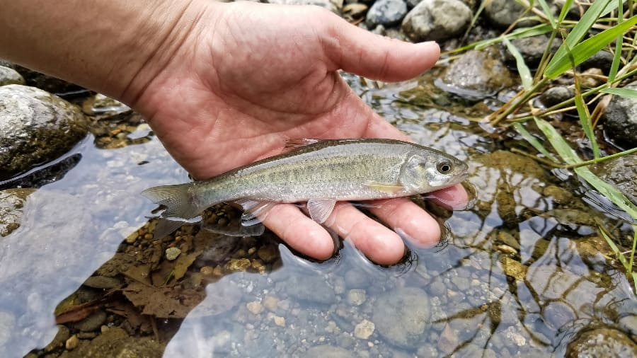
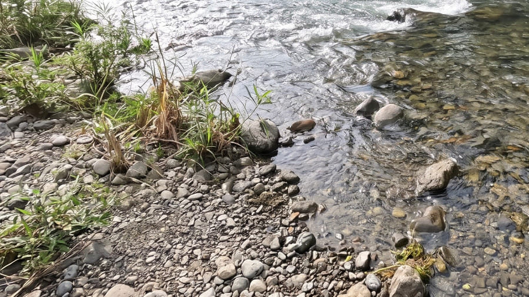
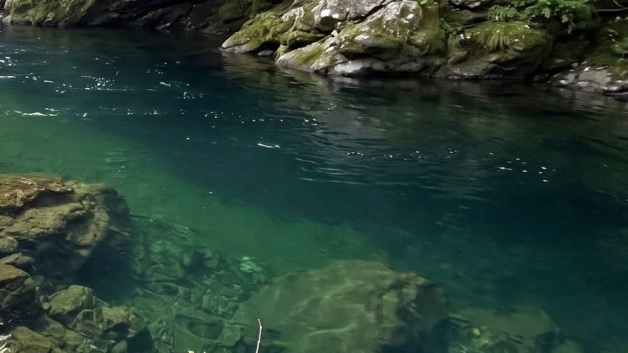
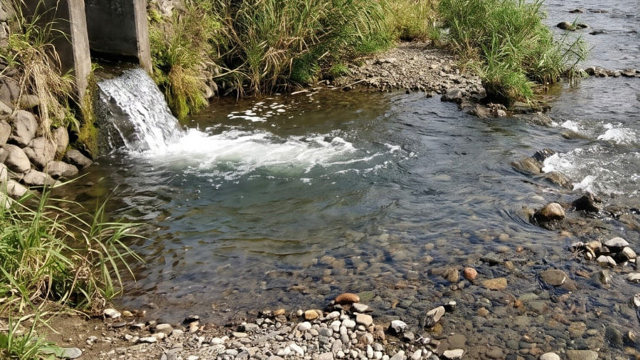
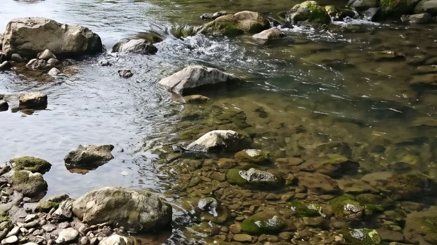
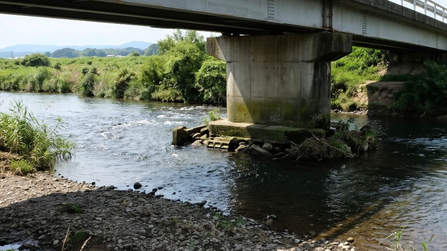

【チャビング入門】ダイソー・Seriaの100均ルアーで身近な川遊び！オイカワ・カワムツ・ウグイの狙い方とポイント解説

自宅の近くを流れる小川や用水路が、そのまま手軽なルアーフィールドになる——。そんな身近さとゲーム性の高さで人気が広がっているのが、小型の川魚をマイクロルアーで狙う「チャビング（Chubbing）」です。かつてエサ釣りや毛バリで親しまれてきたオイカワ（ヤマベ）やカワムツ、ウグイは、1g前後の小さなルアーに驚くほど果敢に反応します。澄んだ浅瀬で魚がルアーを奪い合うように追ってくる一部始終を眺めながら、「追うのに掛からない」もどかしい駆け引きを攻略するのが最大の魅力です。
1. チャビングとは？
英語でコイ科の小魚を指す「Chub（チャブ）」に由来する、河川のウルトラライト・ルアーゲームです。厳密には英名にChubが付くカワムツ・オイカワ・ヌマムツを指しますが、実際の現場では同じ道具で狙えるウグイなども含めて「身近な川魚を極小ルアーで楽しむ釣り」として広く親しまれています。
遠征も大荷物も不要。小さなルアーケースをポケットに入れ、近所の里川を散歩気分で歩きながら魚影を探す軽快さが、初心者からベテランまで支持される理由です。
2. 主な対象魚と、水辺で出会う小魚たち
関東の河川や水路でチャビングを楽しむなら、軸になるのは以下の3種です。
- オイカワ（別名：ヤマベ）：10〜15cm前後。明るい浅瀬を群れで泳ぐ主役級ターゲット。夏場のオスは青緑やピンクの鮮やかな婚姻色が現れます。口が小さいため極小フック選びがカギになります。
- カワムツ：10〜20cm前後。体側の暗い縦帯が目印で、好奇心旺盛な入門最適魚。流れの中でも積極的にルアーを追い、夏場は水面へ落ちる虫を狙ってトップウォーターにも飛び出します。
- ウグイ：15〜25cm前後。関東の川に広く定着する頼れる存在。オイカワやカワムツより大きく育ち、細い竿を気持ちよく絞り込む強い引きを味わえます。
穏やかな水路や川の溜まりでは、クチボソ（モツゴ）やモロコ（タモロコ等）の群れに出会うこともよくあります。ただしどちらも口が極端に小さく、ルアーを追っても針に乗りにくいため、チャビングではあくまで「補助的なゲスト・観察枠」です。目の前の群れを確実に釣ってみたいときは、赤虫や練りエサのウキ釣りへ切り替えると楽しめます。このほか、中下流域では近縁種のヌマムツや、小河川のアブラハヤ、底付近でニゴイなどが掛かることもあります。
3. 魚が集まる5つのポイント
広い本流の真ん中より、川の表情が読みやすい小〜中規模河川や水路が好相性です。まずは次の5か所を優先して探りましょう。
① 瀬（浅く流れのある場所）

酸素もエサも豊富な一番の食事処です。流れの芯より、両脇の緩い筋（瀬脇）や深みへ広がる出口（瀬尻）に群れが溜まります。② 淵（深く流れの緩やかな場所）

魚の休息場であり、真夏の日中や冬の低水温期の避難所になります。瀬の終わりから深場へ落ち込む境目（かけあがり）や岸際の反転流を、少し沈めてゆっくり引きましょう。③ 流れ込み・合流点

農業用水路や支流からエサと酸素が絶えず供給される特級ポイントです。強い流れが本流と混ざる「ヨレ」や「濁りと澄みの境目」を重点的に通します。④ 岩・石の周辺

川底の石は水生昆虫の住処兼、魚の隠れ家です。流れが石に当たって弱まるすぐ裏側や、石と石の間の筋をかすめるように通すと好反応が得られます。⑤ 橋脚の下・岸際の日陰（シェード）

鳥などの天敵を避けられる貴重な屋根になります。晴天時は「日向と日陰の境界線」や橋脚のすぐ下流側にできる巻き返しが鉄板です。4. 季節ごとの狙い目
| 季節 | 狙いやすさ | 魚の居場所と攻め方の目安 |
|---|---|---|
| 春 | ○ | 日中に水温が上がる時間帯が好機。平瀬や流れ込みを中心に探る。 |
| 夏 | ◎ | 最盛期。朝夕の浅瀬、日陰の岸際、流れ込みで水面付近まで高活性。 |
| 秋 | ◎ | 瀬から淵まで広範囲で数釣りが狙える。冷え込むほど中層〜底も意識。 |
| 冬 | △ | 流れの緩い淵の底や水温が安定した流れ込みを、軽いルアーで極スローに。 |
5. 初心者向け入門セット｜ダイソー＆Seriaで豊富に揃う！
チャビングに高価な専用タックルは不要です。エリアトラウト用やアジング用のUL（ウルトラライト）タックルがあればそのまま流用できます。
| アイテム | 初心者向けの目安 |
|---|---|
| ロッド | 5ft前後のULスピニングロッド（0.5〜3g対応） |
| リール | 1000〜2000番の小型スピニングリール |
| ライン | ナイロン 2〜3lb（しなやかで口切れしにくい） |
| ルアー | 0.8〜1.5gのマイクロスプーン、小型スピナー・ミノーなど |
| 小物類 | 極小シングルフック（交換用）、極小スナップ、プライヤー |
ダイソー・Seriaの100均ルアーがとにかく優秀
チャビングを始める最大の追い風が、ダイソーやSeria（セリア）といった100円ショップの釣具コーナーの充実ぶりです。
- 1g前後のマイクロスプーンが豊富：カラーバリエーションも揃っており、川底の石で根掛かりしても気兼ねなく際どいコースを攻められます。
- プラグや小物まで一通り選び放題：スプーンだけでなく、マイクロクランク、小型ミノー、極小ワーム＆ジグヘッド、さらにはスナップや収納ケースまで100均だけで手軽に揃えられます。
- ワンコイン程度から始められる：まずは「1gスプーンを2〜3色＋気になる小型プラグを1〜2個」と、少ない予算から気軽に試せるのが魅力です。
100均や市販トラウト用ルアーに最初から付いているフックは、オイカワや小型カワムツの口には少し大きめなことがあります。極小のシングルフック（#12〜#14前後・バーブレス推奨）に付け替えるだけで、驚くほどフッキング率が上がります。
6. 基本の釣り方と「追うのに掛からない」突破のコツ
操作はとてもシンプルです。水辺へ近づく前に遠くから魚影やヨレを観察し、群れの少し上流や斜め上流へキャストして流れに乗せながら一定速度で巻くのが基本になります。手元にコツッと重みが乗ったら大きく合わせず、竿先を軽く立てて優しく引き寄せましょう。
魚が後ろまで追ってくるのに口を使わないときは、次の4つを順に試してみてください。
- 巻き速度を少し変える：一瞬だけ速くしてスイッチを入れる、あるいはわずかに落として食う間を作ります。
- 一瞬だけ巻きを止める：ヒラッと沈む一瞬の姿勢変化で思わず口を使わせます。
- ルアーを軽く・カラーを変える：金銀などの派手色から茶系や落ち着いた色へ落とすと急に反応することがあります。
- フックを小さくする・針先を点検する：何度もつつくのに乗らない最大の原因はフックサイズと針先の鈍りです。
川魚は条件の良い数メートル四方に固まっていることが多いので、数投して反応がなければ次の石や流れ込みへテンポよく歩き回る（ランガンする）のが数釣りの近道です。
7. 漁協・遊漁券の確認と優しいリリース
身近な川や水路であっても、日本の河川の多くは地元の漁業協同組合（漁協）が管理しており、魚種ごとのルール（漁業権）が定められています。アユや渓流魚だけでなく、オイカワ・ウグイ・カワムツなどの雑魚にも遊漁券（日釣り券・年券）が必要な河川は少なくありません。
釣行前には必ず管轄の漁協情報を確認し、以下の点をチェックしておきましょう（釣り行こNAVIの各スポットページでも管轄漁協を確認できます）。
- 対象河川・対象魚種に遊漁券が必要かどうか
- ルアー釣りが許可されているエリアか（エサ釣り専用区や禁漁区でないか）
- 禁漁期間や釣り禁止看板、農作業の妨げにならない駐車場所の確認
また、オイカワやカワムツは体が小さくデリケートな魚です。魚に触れる前に必ず手を川の水で十分に濡らし、できる限り水辺の水溜まりや水中で手早くフックを外して、元気に泳ぎ出すのを見届けてリリースしてあげましょう。
普段は何気なく通り過ぎていた近所の小川も、100均の1gスプーンを手に水面を覗き込めば、オイカワやカワムツ、ウグイたちが息づく奥深いフィールドに変わります。まずは管轄漁協のルールを確認のうえ、身近な水辺で最初の1投を流し込んでみてください。
あわせて読みたい
📍 関東のオイカワ・カワムツ・ウグイ・モロコ・クチボソ生息・釣果スポット
※マップ上の赤いドットが釣れるポイントです。